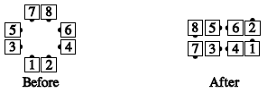

Working individually, the designated outside dancers turn 1/4 in place to face promenade direction and Counter Rotate the designated fraction (or 1/4, if none is specified) around the outside of the square, while the other dancers step forward into the middle.
In this diagram, dancers #1, 2, 7, & 8 are the ones designated to Single Rotate.
